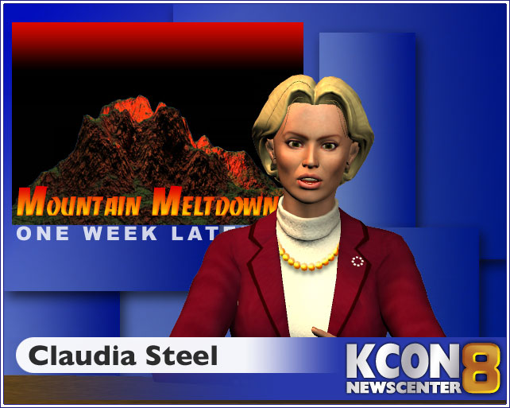
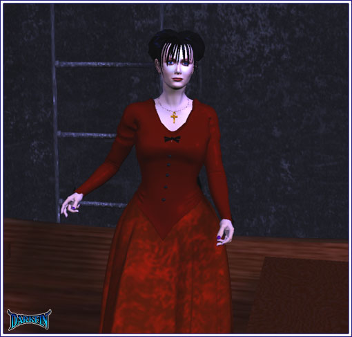
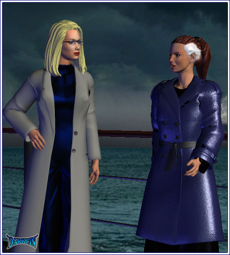

Dan Welcome back to KCON's special presentation, "Mountain Meltdown: One Week Later" - I'm Dan Henshaw...

Claudia And I'm Claudia Steel - the eruption at Mt. Wiggins was more than unsettling for many of our viewers but what has truly amazed emergency personnel, as well as local residents, is how rapidly things have returned to normal...
Craig Frankly, we are stunned, the way that mountain blew... this valley dodged a mighty bullet - everybody has been working very hard, helping out when and wherever - the community has truly come together
Claudia No new eruptions have occurred since the initial blast and seismic activity in the area has dramatically decreased - sadly, the current death toll stands at 82
Dan Well, Claudia, I may be sweeping ash off of my prized eggplants for some time but traffic is flowing faster than hot lava...
Dan (Clearing his throat) All roads in and out of the county are clear and in use - FEMA centers remain stationed throughout the city and anyone needing assistance is encouraged to contact the number on your screen
Claudia Clean-up crews have already begun to assess the damage in the north-eastern part of the valley - the south end of Quartz Lake has sustained the most devastation - SCU's chief biologist, Dr. Javier Sanchez, is heading a team to determine what course of action is needed...
Javier Right now, we just don't know for sure - it might take decades for the lake's ecosystems to fully recover but we will do everything humanly possible to help this landmark return to its natural state
Dan The Quartz County park commissioner is also on site and predicts that the upper end of the lake will be ready for use in a matter of weeks - for many residents, the tragic death of local entrepreneur, Joseph Tiszo, and the destruction of the historic Quartz Lake Inn are devastating losses... on a personal note, Joe always admired my mushrooms and I will forever be an ardent fan of his grapes - we'll miss you, Big J!
Claudia Uh, yes... in another shocking loss, Beacon Point residents are still mourning the sudden death of Meeramar's, Karl von Meer - the Duquesa Bay shipping giant died of a heart attack just over a week ago - later today, his family will hold a private ceremony aboard the company's lead tanker - several foreign and national dignitaries are expected, including the state's governor - von Meer's ashes will then be buried at sea
Dan When we come back, Austin Ortega is here with the weekend weather forecast...
Austin (Dramatic face) What could be worse than chunks of molten rock and layers of icky ash? - RAIN, that's right, RAIN... and plenty of it!
Austin Say "see ya" to the Cali sunshine and hola to a whole lot of precipitation - stay tuned
Claudia How long is it going to rain?
Austin My forecast is just minutes away
Claudia (Barking) Ortega!
Austin (Holding up his hand) Chill, sister - on and off for the next week - and it will be unusually heavy for this time of year
Claudia Christ, I just did my hair
Austin You did?
Dan Bad times for your follicles is fantastic news for my rutabagas
Claudia Does anyone know where the hell Turner disappeared to this week? - we're supposed to have my semi-annual review and the sneaky bastard was a no-show
Austin Why don't you ask Lady Shepperton? - I'm sure she knows everything, and I do mean everything, about our Master Gates
Claudia I don't need to know how many moles are on his cock, I need to know when I can schedule an appointment with the asshole!
Dan (Whispering) Um, Claw - you might want to find different word usage... your children are here
Claudia (Turning around) What?
Claudia Oh... hi
Ben Honey, don't forget, we have to be at the memorial in an hour
Claudia Right, we're almost finished
Hannah Mommy, what's a cock?
Palmer Shut up retard, it's a rooster!
Kayla I believe mother was using a colloquial term that falls under the category of obscenity - right, daddy?
Claudia BENJAMIN, GET THEM OUT OF HERE
Ben C'mon kids, we'll wait for mom in the control room
Claudia ALL OF YOU, IN THE CAR, NOW - I'll be there in 10 minutes!
Dan (To Claudia) You know, if you ever need specifically shaped vegetables to use as teaching tools, feel free to ask - I have this gourd...
Jeremy (Grabbing a soda) Was it really that bad?
Gracie Huh?
Jeremy I just played my latest track for you and not one word
Gracie Oh, sorry - I'm a little out of it... okay, a lot out of it right now
Jeremy It wasn't you fault
Gracie Tell that to the station
Jeremy Whoever stole the newsvan is to blame - it was a time of chaos and panic, like you could have stopped a gang of thugs from boosting it!
Jeremy They had no right to suspend you without pay
Gracie There was a million dollars worth of equipment in that van
Jeremy Your creep boss bleeds money, besides, the insurance should cover it
Gracie That's not the point - the point is that it was my responsibility and I failed in that responsibility
Jeremy That's such bullshit
Gracie I know, but with the way things are going lately, I'm just happy to have my eight fingers and my gig here
Jeremy Um, they didn't tell you?
Gracie Tell me what?
Jeremy Ooh...
Gracie Spit it out, Colvin
Jeremy The club has decided to add two new nights - salsa and swing
Gracie You have GOT to be kidding me
Jeremy We now have to compete with the other DJ's for the remaining nights
Gracie No frigging way!
Gracie It's... it's all just getting out of hand - Morri, the crazy happenings, the van...
Jeremy Zach
Gracie (Nearly choking) ZACH - what do you know about Zach?
Jeremy Nothing... except that it always comes down to Isaacson with you
Gracie Well, sadly, not anymore - I honestly don't know how to handle his huge problem - he needs serious help and I just can't be the life raft this time
Jeremy That's kinda harsh - can't you at least throw him an oar?
Gracie It's all so overwhelming right now - I'm having trouble processing anything except alcohol content
Jeremy Maybe you should take a trip to Seattle and see your family?
Gracie I went back home to my folks once with my tail between my legs - HA, never again!
Jeremy What happened?
Gracie It was right after my divorce - for two solid weeks, my mom kept reminding me how much better off I would have been if I had married my second cousin in Yokohama and then my dad kept shaking his head at me the entire time - and my brother with his sarcastic putdowns...
Jeremy Surely he can't top the master?
Gracie I was his apprentice
Jeremy Whoa - you are better off down here
Gracie Or in Oahu - I have friends there that I haven't seen in awhile, now might be the time - oh, wait, that's right, I have no money... so, I guess I'll be getting me a Jamba Juice job application on the way home
Jeremy Don't you get alimony?
Gracie Nope, it was an amicable divorce, we each got half of diddlysquat because that's what we had and that's what we agreed to
Gracie WHERE DID YOU GET THIS? - ARE YOU SELLING DRUGS?
Jeremy Hardly - I might get baked now and then but I'm no dealer - the last thing my mom and little bro need is me behind bars
Gracie Then, how did you get this? - your girlfriend?
Jeremy No... Pen doesn't pay for me anymore
Gracie Hey, how's she doing? - it must have been horrible inside that jet?
Jeremy Dunno - haven't seen her since she got home - she won't speak to me
Gracie So, where did you get the roll of dead presidents?
Jeremy I have this totally cool side job - and it's going to hit really big, really soon
Gracie Excellent, can I get in on it?
Jeremy Sorry, I wish you could, but it's a member's only kind of deal
Gracie By members, do you mean special people or penis only?
Gracie (Turning serious) Jere - you're a good kid - look me in the eye and promise me that you aren't doing anything illegal
Jeremy I swear, it's all legit - don't worry about me
Gracie You aren't selling body parts... or fluids?
Jeremy It hasn't come down to that... yet - that was a joke, relax
Gracie Why can't you tell me about this job?
Jeremy Maybe someday... but not now - as a friend, please don't ask, just take the cash as repayment for all the times you bailed me out
Gracie (Thinking) Okay... but you take my turntable in return
Jeremy How about I borrow it until you get back to the mainland?
Gracie I could live with that - thanks, Jere!
Jeremy (Sighing) You'll be a lot safer away from here, Grace, trust me
Gracie (Pulling back) What?
Jason We need to talk, Takanachi
Penelope It would have been a lot easier if we went by helicopter
George After what happened... this boat is perfectly fine
Lydia (Clutching her cane) George, I'm going to need at least two other people helping me onto that monstrosity
George I know that, Lydia, I'll take care of it
Lydia How absurd to hold the memorial out here on this thing - why couldn't it have been on their yacht?
George This was Karl's business after all, it seems appropriate - and there wouldn't have been enough room on the yacht
Lydia Well, they sure do expect a lot from us
George It's not supposed to be about us
Penelope (Looking up at the sky) When are we going to talk about what happened?
Lydia What, dear?
Penelope What happened in the plane?
Penelope It's been a week now
Lydia Be grateful we are here today instead of where poor Karl is and simply leave it at that
Penelope I want to know what happened to me - I have a right to know
George It was a fortunate fluke, now drop it
Penelope Fluke my ass!
George I SAID leave it alone
Lydia Penelope, watch your language - George, keep your voice down - the two of you need to remember why we're here

Lydia (Rolling her eyes) The one day she decides to wear color...
Stephanie Pretty decent turn out
Erika Have you talked to him today?
Stephanie About an hour ago - he insisted that I bring a mini video camera because he wants to see the whole thing - who says something nice... who doesn't
Erika Heh, I see my father still has a flare for the macabre
Stephanie It's remarkable how well he's recovering, thanks to you - the antidote will be written up in science journals for sure
Erika It would have killed him outright if it didn't work - I had to take the risk
Stephanie Still no idea who did this or why?
Erika (Long pause) I need to investigate further
Stephanie There's so much I don't understand, Erika - Hector is even more of a mystery than you
Erika When you see him again, please thank him - if there's anything he ever needs, financially or otherwise, tell him to contact me
Stephanie (Arms folded) If I see him again...
Erika So, who... or what is inside?
Stephanie "Anna no last name" - courtesy of Bay Valley Medical Center's indigent cases - she was a crabby old wino with no family or friends, not to mention teeth - the few brain cells that weren't soaked in booze were riddled with cancer
Erika Ah
Stephanie I figured she deserved a nice send off

Erika How munificent of you
Stephanie Besides, it's a great way to get back at my ex - taking this tanker out on a dry run must be costing Doug plenty
Erika (Searching the crowd) I know he's a complete ass but I can't believe he didn't show up
Stephanie (Sighing) I can... why do you think I divorced the bastard? - he may be your father's business partner but they stopped being friends long ago
Erika Still...
Stephanie I asked Ben and no one has seen him since the volcano
Erika Funny, the current Mrs. Martel claims she had dinner with Doug last night and that he would have been here except that he wasn't feeling well - old polo injury
Stephanie What a lying sack of shit!
Erika Which one?
Stephanie Oh, what does it matter? - we know the truth and won't they all be astonished when Karl rises from the dead?
Erika That won't be for sometime - did you make more antidote in case our toxic terrorist turns up again?
Stephanie I have some with me at all times and there's a stash at the hospital
Erika Good
Stephanie So, when are you going to visit him?
Erika Isn't he safe at that clinic?
Stephanie That's not my question - Karl wants to see his daughter, why haven't you been by?
Erika I've been...
Stephanie Busy - busy throwing yourself off of buildings, disappearing when your family needs you, acting stranger than usual - what is going on?
Erika I can't get into this now, Stephanie
Stephanie If it were drugs, I would be relieved because it would offer a comprehensive explanation - but I know addicts and you do not fall into that category
Erika (Smirking) Not everything falls into a simple category - as a doctor, you should know that
Stephanie Then, what is it, Rikka? - why won't you let me help you?
Erika You have helped my father and that has been an immense help to me
Stephanie But...
Erika That's all I care to discuss
Erika Actually, you can help me with one other thing...
Stephanie Name it
Erika Lend me your PDA - I need to check in with someone
Stephanie (Handing it to her) No problem
Stephanie Oh dear, I see my daughter didn't take her seasick pills, I'll be right back
KJ Hey
Erika (Noticing his bruised cheek) Kage?
KJ So glad you could make it today!
Erika Don't start, little brother - who hit you in the face?
KJ I fell
Erika That's not a fall, that's a punch
KJ Why do you care?
Erika Why are you causing a scene?
KJ Oh, that's right, there should be no high emotion during a funeral
Erika I just want to know who hit you and why?
KJ Maybe if you showed up to the house, I would have told you what happened - where the hell were you all week?
Erika On my...
KJ Boat - yes, I was there - you couldn't even let me in when I came by?
Erika I'm sorry - I was having a very rough week
KJ (Tearing up) We were ALL having a rough week - you were NOT the only one who lost dad
Erika (Trying to wipe his face) I'll come home with you and mother after the service
KJ (Backing off) Don't do us any favors
Erika m, will be by soon - all is well, f
Erika (Muttering) All is not well